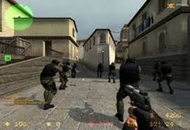

O Que é Counter Striker?
Editor:Felipe M.C
Hoje em dia e dificil encontra alguém que goste de videogames e que nunca tenha jogado ou ao menos visto Counter-Strike, seja em casa ou em uma lan house.
O jogo (também conhecido como CS) foi um dos responsáveis pela popularização das LAN Houses em todo o mundo. Além disso, graças a Counter-Strike, uma nova modalidade nasceu (ou pelo menos ganhou um nome) entre as pessoas que jogavam muito e se dedicavam mais que o normal. O esporte eletrônico.
Tudo isso porque Counter-Strike foi o pivô de várias disputas entre equipes de jogadoresue com grandes sessões de treinamento, conseguiam conduzir um time com uma organização impressionante, onde para cada membro do time, uma função específica era atribuída.